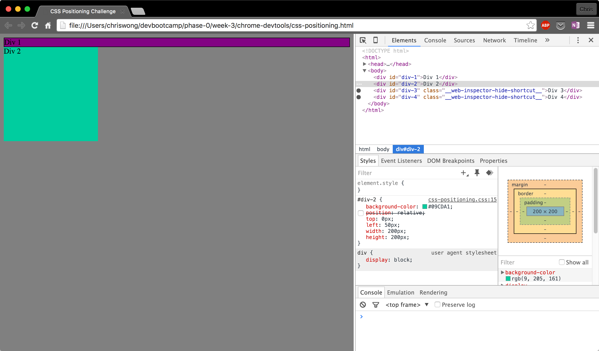
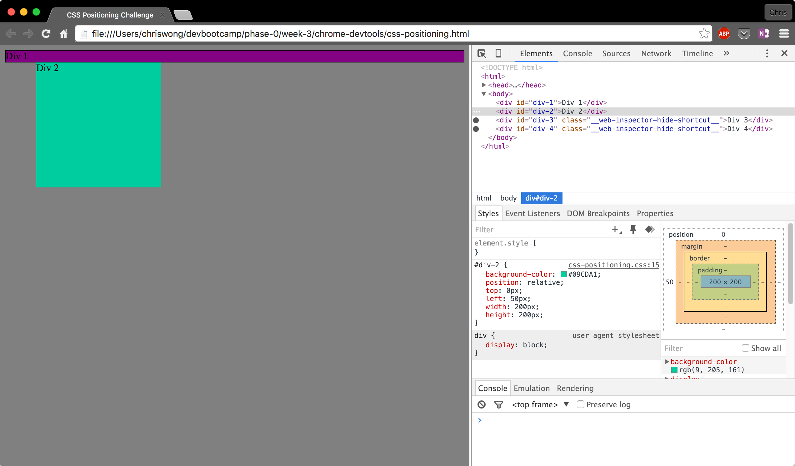
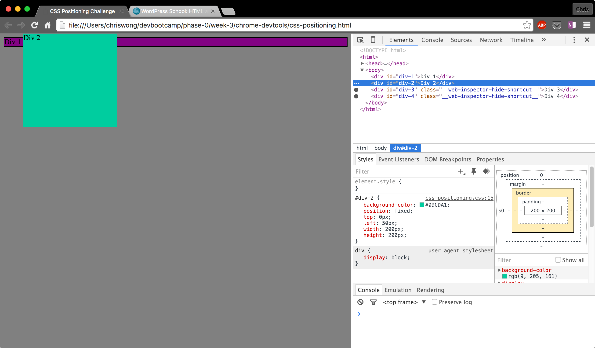

CSS Positioning Cheat Sheat
This is a quick and dirty CSS positioning cheat sheet. I always forget which type of positioning I should use to get my elements right were I want them. Hopefully this sheet will make a good reference!
position: static;
This is the default state that html elements are in when first created. They are not affected by top, bottom, left, and right properties. They're not positioned in a particular way, it is positioned according to the normal flow of the page.
Example: Div 2 is in the static position. It is in the flow of the web page. Since Div 1 takes up the width of the page, Div 2 falls right below it on the far left. 
position: relative;
A html element that is positioned relative to its normal position. You can adjust the distance away from the normal position using the top, bottom, left, and right properties. Other elements will not be adjusted to fit into any gap left by the element.
Example: Div 2 now has a relative position of left: 50px. This moves the div to the right of it's static position 50px. 
position: fixed;
A html element with a fixed position is positioned relative to the view of the web browser. The element will always stay in place even if the page is scrolled by the user. You use the top, bottom, left, and right properties to change the position.
Example: Div 2 is in a fixed position. It will always stay in this position regardless of where the viewport of the web browser window is on the page. 
position: absolute;
An element with an absolute position is positioned relative to the nearest positioned parent. If the element has no positioned ancestors, it uses the document body.
Example: Div 2 is now in the absolute position. Since Div 2 does not have a parent, it is using the document body as the parent to position itself. Specifically 400px from the top, and 50px from the left.